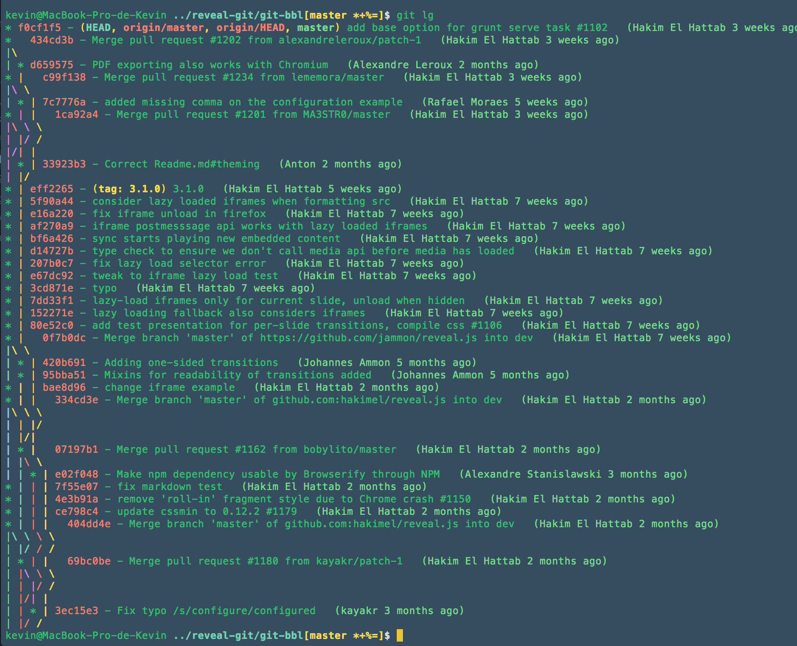
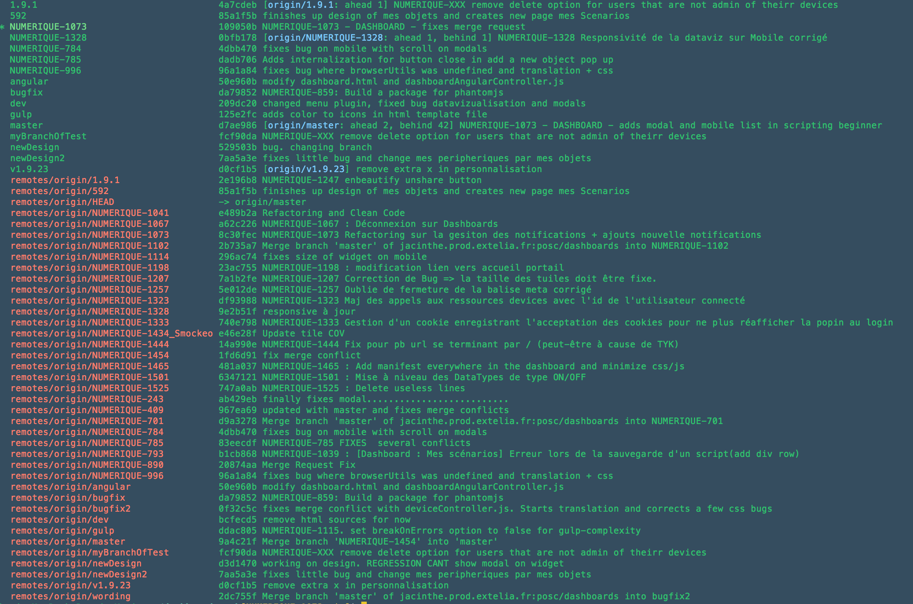
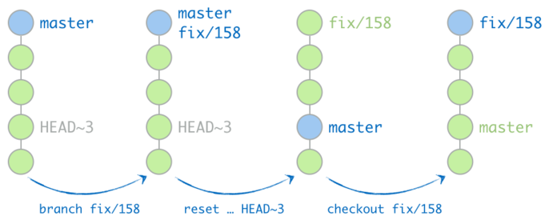

GIT
C'est ok de faire des bétises
(sauf sur master...)Présenté par Kevin
git init
$ git init
Crée un .git/ dans le répertoire en question
- .git/config pour modifier votre configuration
- .gitignore pour que git ignore des fichier
GIT HELP
$ git help [<command>]
Core Concept of Git
4 niveaux d'architectures
- Untracked - .gitignore
- Tracked (Working directory) - $ git init
- Staged (Staging index) - git add
- Commited (Repository) - Partagé
GIT HEAD
HEAD est un pointer qui est au bout de la branche courante sur le repositotyDETACHED HEAD
Le pointer n'est pas sur le commit le plus récent
Je commit :) !
Première chose a faire
$ git config --global status.showUntrackedFiles all
$ git status
le Stage
$ git add [<fileName>]
pour voir les différences entre le working directory et le stage:
$ git diff
pour voir ce qui va partir au commit:
$ git diff --staged -w
$ git diff --staged --color-words
Unstage
$ git reset [<fileName>]
Le commit
Le contenu
- Un seul changement par commit
- Un changement complet par commit
Les messages
- Commence par le numéro de la JIRA
- Suivi par les briques impactées
- Suivi par un message au présent décrivant le commit
- $ git commit -m "NUMERIQUE-2015 - DASHBOARD COMMONS DATASTORE - Modifie la class MaClass.java"
- $ git commit --amend
Retoucher le dernier commit
$ git commit --amend
Ajouter un fichier
$ git add vendor/scripts/underscore.min.js
ou bien
$ git rm --casched vendor/scripts/underscore.min.js
puis
$ git commit --amend --no-edit
Changer le message
$ git commit --amend -m "NUMERIQUE-0000 ...... !"
Les Stashs
Un meilleur stash
$ git stash save -u 'Refactorisation de la médiation'
save permet d'ajouter un message
-u permet de rajouter les fichiers non trackés
Récupérer son stash
$ git stash pop
pop (apply + drop) Supprime si le apply réussi
git log
$ git config --global alias.lg "log --graph \ --pretty=tformat:'%Cred%h%Creset -%C(auto)%d%Creset %s \ %Cgreen(%an %ar)%Creset'"

Push
Ne pas poucher trop souvent
(30 commit pour 2 push/jours)Retravailler ses commits avant de pusher
git push
Evitez:
$ git push
préférez:
$ git config --global push.default upstream
git pull
De base :
$git fetch
$ git merge
Préférez:
git rebase --preserve-merges
Raccourci config:
$ git config --global pull.rebase preserve
Faire une nouvelle branche
$ git checkout -b feature
Lister les branches
$ git branch -avv
Travailler toujours sur une branche
$ git branch bugfix
$ git reset --soft HEAD~3
$ git checkout bugfix

MERGE vs REBASE
MERGE (FUSION)
A n'utiliser que pour fusionner des branches a la fin d'une story, d'une correction de bug..

REBASE
A utiliser pour se mettre a jour avec le travail des autres

Cherry picking
Récupérer 1 commit d'une branche pour le rajouter sur une autre
(Ce que fait un rebase)
Gérer les conflicts
$ git config --global merge.conflictStyle diff3
$ git rebase --preserve-merges